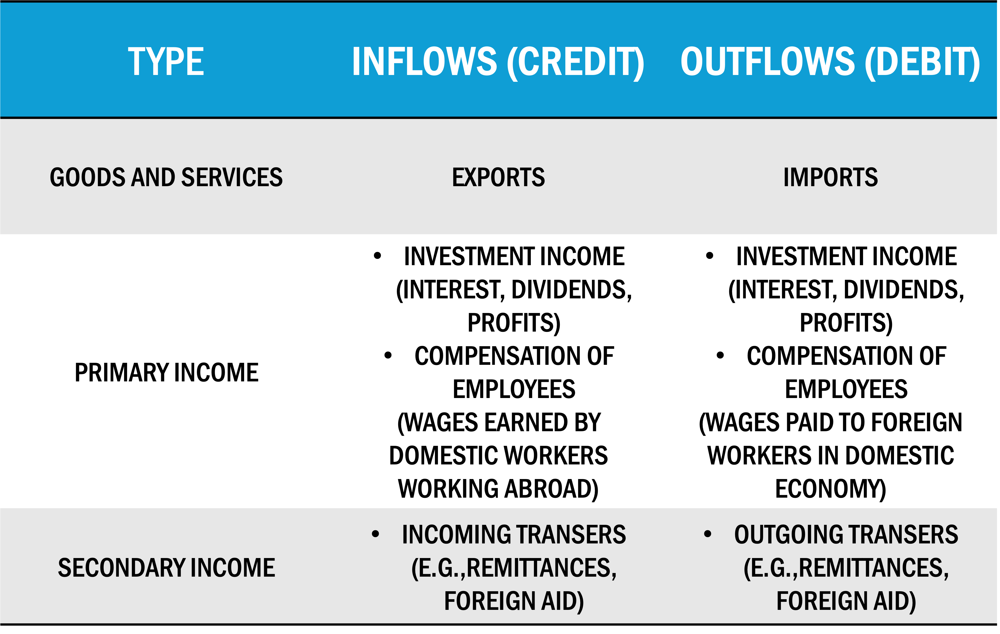
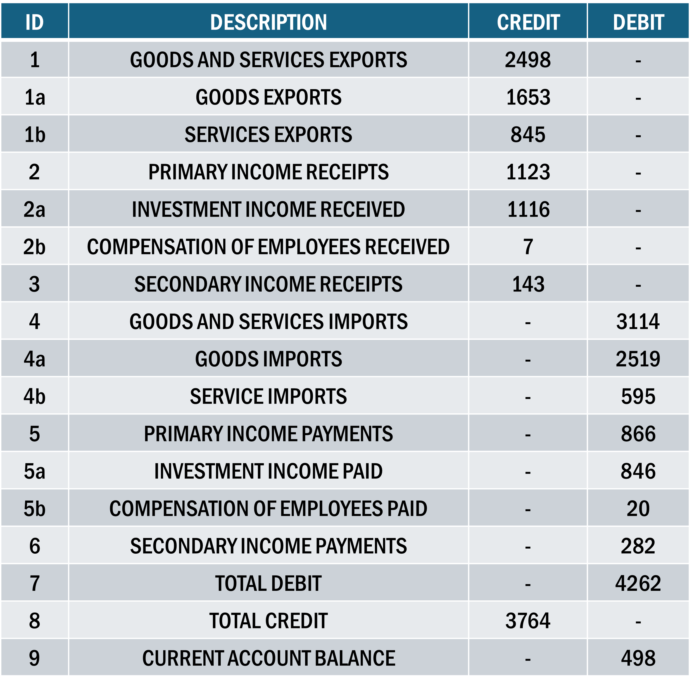

Current Account Basics
Definition: Records the transaction of goods, services, investment income, and unilateral transfers between residents of a country and the rest of the world
Exports & Imports
Income on Equities
Income on Debt-related Assests
Repatriated Income by Multinational Enterprise (MNE) firms
Current Account Inflows
Current Account Inflows are monetary inflows, exchanged for goods/services outflows
Country current account surplus implies CA Inflows are greater than CA Outflows
\(\Rightarrow\) Outflow of goods, services, investment income, etc. of country are greater than inflows
Capital & Financial Accounts
Capital Account:
Records transactions of highly specialized financial assets and liabilities
- Gifts of an embassy
- Acquisition of land for embassy use
Financial Account:
Tracks capital flows between economies, usually long-lasting items relative to goods or services
- Foreign Investment
- Purchase or sales of foreign stock & bonds
- International bank lending
CA: Trade Balance
The trade balance is total exports minus total imports
- A trade balance deficit is a case in which total imports of goods and services outweighs total exports
- It is possible to maintain a deficit in goods and surplus in srevices, but normally the net amount of both is considered
For the US, the 2023 USD trade balance was $3,053.5 bn minus $3,8269 bn, or $951.2 bn.
Because the value is negative, the United States had a trade deficit
CA: Breakdown
Current Account measures all current, non-financial transactions between a nation and the rest of the world
Goods and Services trade (Trade Balance)
Earned income paid abroad and received from abroad (Primary Income)
International transfer payments (Secondary Income)
All three of these items have credit and debit components in BoP and in the construction of CA balance
CA: Breakdown

CA: Breakdown
Investment income items not to be confused with the flow of investment capital used to buy a business or company shares
Investment income is the income received or paid on the existing investments
CA: Primary Income
Useful to think of primary income as payments or receipts for use of financial capital
If a US company invests in Mexico’s stock market, the initial investment will not show up in the current account but will be included in the financial account.
Subsequent flow of dividends back to the US company will be counted in the United States as income received and in Mexico as income paid.
If US company operating in Mexico pays wages from its home in the US, the wages are included in the primary income category of the current account and are recorded as a receipt by Mexico and payment by the US.
CA: Secondary Income
Secondary Income includes payments made that are not in exchange for a good or service
- Foreign aid, or the remittances (transfer of wages earned in one country to residents of another country) of immigrants temporarily residing in another country
In US, payments are small relative to the overall current account
Transfers are sometimes very important to developing countries receiving large volumes of either foreign aid or remittances from their citizens working abroad
CA: Calculate Balance

CA: US Case
The US current account deficit has been trending downards for the past 50 years
We will explore the causes and consequences of large current account deficits later, but here it should be noted that a current account deficit is not simply a sign of weakness
Rapid economic growth in US raised income, increased spending power means greater imports
CA: US Case
Foreign incomes did not rise as rapidly
Current account deficit in 1990s was a sign of relative US economic strength
Deficit is not sustainable in the long-run and could create serious future problems